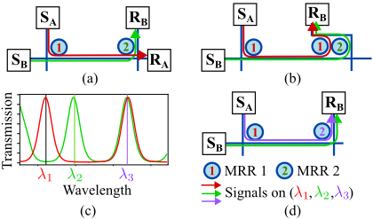
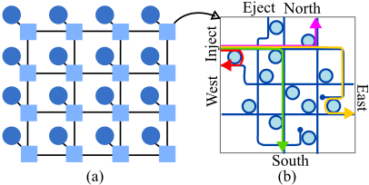
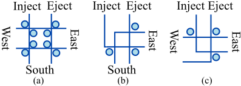
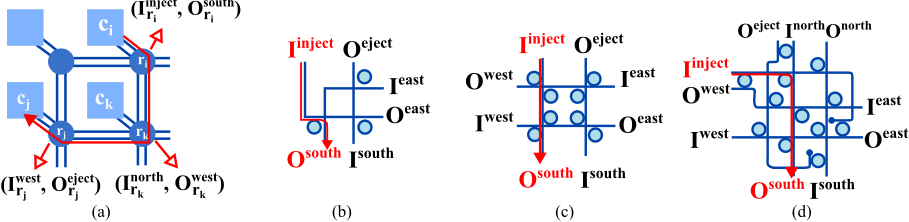
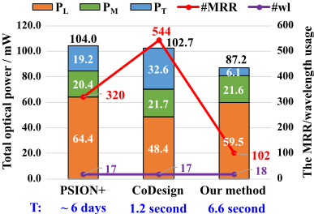
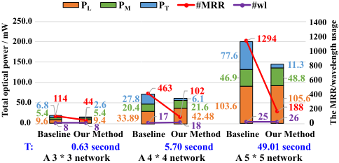

基于多谐振（Multi-Resonance）MRR 的 Mesh 型波长路由光片上网络（WRONoC）
论文面向多核处理器中波长路由光片上网络（WRONoC）的设计自动化问题：已有方法无法同时降低设计复杂度与总光功耗，且每个 microring resonator（MRR）仅解复用一个特定波长，导致 MRR 用量、调谐功耗与插入损耗偏高。方法上采用路由器位置固定的 mesh 模板，构建包含 OXY、Crux、Cygnus、GWOR、Light 及自研 3-port 路由器的 router-library；第一步用 MILP 模型在 XY/YX 候选路径中选择信号路径并完成路由器选型，优化最差插入损耗与 MRR 总数；第二步用 ILP 模型分配波长并配置 MRR 半径，利用 MRR 多谐振特性使单个 MRR 解复用多个波长，避免在同一耦合点增加额外 MRR。实验表明：16 核网络综合仅需数秒（PSION+ 需 6 天），MRR 用量较 PSION+/CoDesign 减少 68%/81%，总光功耗降低约 13%。
WRONoC 设计自动化中，已有方法无法同时降低设计复杂度与总光功耗：PSION+ 系列工具的计算复杂度随网络规模指数增长（8 核数秒、16 核需 6 天），CoDesign 虽快但 MRR 用量高（16 核网络 PSION+ 需 320 个 MRR、CoDesign 需 544 个）。此外，现有设计中每个 MRR 仅配置为解复用一个特定波长，显著增加 MRR 用量、热调谐功耗与插入损耗。
以易扩展的 mesh 结构为设计模板，路由器位置与互连固定以大幅降低计算复杂度；构建 router-library，含三个 5-port 路由器（OXY、Crux、Cygnus）、两个 4-port 路由器（GWOR、Light）与自研 3-port 路由器，并通过旋转支持多种 port combination。第一步用 MILP 模型：对每个通信仅考虑 XY/YX 两种候选路径以压缩解空间，联合选择信号路径与路由器选型，优化目标为最差情况插入损耗与 MRR 总数的加权和。第二步用 ILP 模型：为信号路径分配波长、为 MRR 配置半径，利用 MRR 多谐振特性（单个 MRR 可谐振多个波长）使需在同一位置耦合的信号共享 MRR，并约束重叠路径使用不同波长以避免数据冲突。实现基于 C++ 与 Gurobi 求解器。
16 核网络综合时间仅需数秒，与 CoDesign 相当，而 PSION+ 需 6 天
MRR 用量相比 PSION+ 减少 68%，相比 CoDesign 减少 81%（正文 4.1 节另表述为对 CoDesign 减少 79%）
相比 PSION+，总光功耗降低 14%，其中激光功耗降低 8%
相比 CoDesign，总光功耗降低约 13%
5 × 5（25 核）网络中，相比不使用多谐振 MRR 的 baseline，MRR 用量减少 85%，总光功耗降低 27%
波长使用量与两个 state-of-the-art 方法相当（由 ILP 模型最小化）
首次将不同类型的 ONoC 路由器集成到 mesh 模板中以实现灵活信号路由；首次在 WRONoC 综合中利用 MRR 的多谐振特性，使单个 MRR 解复用多个波长以降低 MRR 用量；从而同时达成低计算复杂度与低总光功耗，克服了 PSION+（复杂度指数增长）与 CoDesign（MRR 用量高）各自的短板。
相关度级别：low
命中能力域：无明显对应
理由：论文属于硅光子学光片上网络（ONoC）的设计自动化研究，核心技术是 MRR 多谐振、波长分配与插入损耗建模，面向多核处理器互连拓扑综合；而团队职责范围是 LPDDR/HBM4/UCIe 等电互连存储与高速接口 IP 的架构、RTL 实现与验证交付。论文不含 RTL 设计、UVM/形式验证、时序与物理实现、仿真加速或验证自动化内容，与 2.1~2.7 七个能力域均无实质技术交集；其 MILP/ILP 优化框架属通用运筹方法，仅具有限的跨域方法论参考价值。
建议动作：仅了解结论
Zhidan Zheng ♦ , Liaoyuan Cheng ♦ , Kanta Arisawa ∗ , Qingyu Li ♦ , Alexandre Truppel ♦ , Shigeru Yamashita ∗ , Tsun-Ming Tseng ♦ , Ulf Schlichtmann ♦
{zhidan.zheng,liaoyuan.cheng,qingyu.muc.li,alex.truppel,tsun-ming.tseng,ulf.schlichtmann}@tum.de,
lucky@ngc.is.ritsumei.ac.jp,ger@cs.ritsumei.ac.jp
♦ 慕尼黑工业大学，德国慕尼黑，∗ 立命馆大学，日本草津

具体而言，得益于波分复用技术[5]，多个波长上的光信号可以沿一条波导同时传输。当信号接近微环谐振器（MRR）且其波长与MRR的谐振波长匹配时，信号会耦合进入MRR并转向另一条波导；否则，信号将保持原有的传输方向。在片上光网络（ONoC）中，波长路由片上光网络（WRONoC）以提供无冲突且无需重构的通信而闻名。在WRONoC中，从发送端到接收端的信号路径在设计阶段即经过精心设计并固定下来[5, 6]。因此，所有信号可以同时传输而不会发生数据冲突[3, 7, 8]。图1(a)展示了一个简单的WRONoC网络，该网络支持从发送端𝑆 𝐴到接收端𝑅 𝐴以及从发送端𝑆 𝐵到接收端𝑅 𝐵的同时通信。具体来说，来自两个发送端的信号分别使用两个不同的波长𝜆 1和𝜆 2，并且两个MRR分别被配置为与𝜆 1和𝜆 2谐振。
针对WRONoC已有若干设计自动化方法。作为首个同时考虑WRONoC拓扑与物理两个层面的方法，PSION系列工具[8-10]基于定制模板对设计空间进行细化，并通过减少MRR的使用来提升能效。然而，使用这些工具时，计算复杂度会随网络规模呈指数级增长。例如，PSION+可以在几秒钟内综合出一个8核网络，而综合一个16核网络则需要六天时间。对于集成更多核心以满足当今通信需求的网络而言，这些工具难以在合理时间内获得最优解。CoDesign[7]提出了一种显著降低计算复杂度和综合时间的WRONoC设计方法。然而，该方法需要较高的
波长路由片上光网络（WRONoC）以在多核处理器中提供高速且无冲突的通信而闻名。以往的工作无法同时降低WRONoC的设计复杂度和总光功耗。此外，在现有设计中，WRONoC的关键组件——微环谐振器（MRR）——每个都被配置为仅解复用单一特定波长。这显著增加了MRR的使用数量和插入损耗。在本工作中，我们将不同类型的片上光网络（ONoC）路由器适配到基于网格（Mesh）的模板中。为了减少MRR的使用，我们利用了MRR的一个重要特性——多谐振（multi-resonance），使单个MRR能够解复用多个波长上的信号。为此，我们提出了一种高效的设计方法，利用多谐振MRR和现有光路由器来综合基于网格的WRONoC，从而降低总功耗。实验结果表明，我们的方法在显著减少MRR使用数量和光功耗方面优于最先进的设计方法。
波长路由片上光网络，网格结构，多谐振微环谐振器。
随着多核处理器趋势的持续发展，片上网络（NoC）中的通信功耗问题正变得日益重要。这一挑战推动了先进互连技术的发展 [1, 2]。其中，基于硅光子技术的光片上网络（ONoC）引起了学术界和工业界的极大兴趣 [2]。与采用金属互连的传统 NoC 相比，ONoC 能够以更低的功耗提供更高的带宽 [3]。
在 ONoC 中，信号传输依赖于两个关键组件：传输光信号的波导，以及能够对来自波导的信号进行解复用的微环谐振器（MRR）[4]。
允许免费制作本作品全部或部分的数字或硬拷贝供个人或课堂使用，前提是这些拷贝并非为营利或商业利益而制作或分发，并且拷贝首页带有本声明及完整的引用信息。本作品中版权归作者以外他人所有的组件，其版权必须得到尊重。允许注明出处的摘录。如需以其他方式复制、再版、发布到服务器或再分发到列表，则需要事先获得特定许可和/或支付费用。如需申请许可，请联系 permissions@acm.org。
© 2024 版权由所有者/作者持有。出版权许可授予 ACM。ACM ISBN 979-8-4007-0601-1/24/06...$15.00 https://doi.org/10.1145/3649329.3655914
MRR 的使用量。例如，在一个 16 核网络中，PSION+ 需要 320 个 MRR，而 CoDesign 需要 544 个 MRR。如此高的 MRR 使用量引入了相当可观的调谐功耗以支持其运行，从而增加了整体功耗。因此，目前尚无方法能够同时降低波长路由片上光网络（WRONoC）的计算复杂度和总光功耗，并将 MRR 的使用量降至最低。
鉴于上述挑战，我们采用一种易于扩展的网格结构作为设计模板。在该模板上，光路由器的位置及其互连是固定的，这大大降低了计算复杂度。为了在模板上实现各核之间的多方向信号路由，我们为每个核配备一个路由器。这些路由器不限于 WRONoC 类型，并且已被证明能够实现高效通信。在此基础上，我们首次将不同类型的 ONoC 路由器集成到基于网格的模板中，从而在 WRONoC 设计中以更低的功耗和计算复杂度实现灵活的信号路由。
为了减少微环谐振器（MRR）的使用，我们利用多谐振MRR进行信号路由。如[11, 12]所述，MRR的一个重要特性是单个MRR可以谐振于多个波长。然而，在当前的波长路由片上光网络（WRONoC）设计中，每个MRR都被配置为仅谐振于一个特定波长。这种配置导致了MRR的大量使用。如图1(b)所示，如果来自两个发送端𝑆 𝐴和𝑆 𝐵的信号需要在同一位置耦合并到达接收端𝑅 𝐵，则需要两个不同的MRR，这会增加MRR的调谐功耗和插入损耗。借助多谐振MRR，我们可以减少MRR的使用。例如，图1(c)展示了两个MRR的透射谱：MRR 1谐振于𝜆 1和𝜆 3，而MRR 2谐振于𝜆 2和𝜆 3。也就是说，两个MRR都可以谐振于𝜆 3。为避免数据冲突，如图1(d)所示，我们将来自发送端𝑆 𝐴和𝑆 𝐵的信号分别设置在𝜆 3和𝜆 2上。这使得信号无需额外的MRR即可到达𝑅 𝐵，与图1(b)所示的情形相比，有效减少了MRR的使用。
在这项工作中，我们提出了一种高效的设计方法，该方法利用多谐振MRR和现有光路由器来综合基于网格结构的WRONoC，以降低总功耗。我们的方法包含两个步骤。首先，我们构建一个基于网格结构的网络，并为所需的通信进行信号路由。具体而言，我们采用XY/YX路由算法，以最小化路径长度的方式对信号进行路由，并对现有光路由器进行适配，以支持采用优化MRR使用方式的信号路由。其次，对于需要在相同位置耦合的信号，我们采用多谐振MRR，而无需引入额外的MRR。此外，我们为信号分配波长，并仔细配置MRR的半径，而不会引起数据冲突。我们在一个真实的WRONoC基准测试上，将我们的方法与两种最先进的设计方法进行了比较：PSION+ [8]和CoDesign [7]。实验结果表明，与CoDesign类似，我们的方法可以在几秒钟内综合出16节点的网络。此外，与PSION+和CoDesign相比，我们的方法分别将MRR使用量减少了68%和81%。凭借最小化的MRR使用量，我们的方法优于PSION+和CoDesign，将总光功率降低了约13%。
在本节中，我们将介绍本工作所需的所有必要要素。

In this work, we adopt the mesh structure as a design template. In a mesh-based network, cores are regularly aligned and managed into a grid form [13, 14]. Each core has a dedicated router to communicate with other cores. Figure 2(a) shows a 16-core meshbased network. Considering that the way of connecting routers is deterministic, when the number of cores increases, the mesh structure can easily be extended by adding more rows or columns of cores and routers without complex redesign. Besides, in the mesh structure, the connections among routers and the positions of routers are fixed, which greatly reduces computational complexity.
我们考虑针对网状结构定制、支持五个方向信号传输的高效ONoC路由器。图2(b)展示了一种具有代表性的有源ONoC路由器OXY [15]，它具有五个端口，可支持来自五个方向的信号：注入/引出、北、东、南和西。在这五个端口之间，OXY提供全连接，即一个输入可以向任何其他输出发送信号。这使其适用于
如前文所述，微环谐振器（MRR）具有多谐振特性。具体而言，MRR由一个环形波导构成，其谐振条件由MRR的半径和信号的波长决定 [5, 11, 18]。当MRR的环回长度是某一信号波长的整数倍时，就会发生谐振。在一定的波长波段内，MRR的周长可以是不同波长的整数倍，从而使该MRR具有多个谐振波长，而无需引入额外的能耗或面积开销 [12]。类似地，对于特定波长和一定的MRR半径范围，不同环回长度的MRR可以是该波长的整数倍并与之谐振，这表明单一波长可以是多个MRR的谐振波长。
在本工作中，我们采用与 [11] 中相同的波长波段、MRR半径范围以及每个MRR半径所对应的谐振波长。

在ONoC中，光功耗与MRR的使用数量呈正相关 [1]。首先，MRR越多意味着调谐功耗越大。通常，MRR热调谐功耗占总光功耗的20%-60%，具体取决于网络中MRR的数量 [7, 19]。此外，MRR是插入损耗的重要来源，而插入损耗决定了ONoC中的激光器功率 [20]。在五种典型损耗类型中，下载损耗（drop loss）和直通损耗（through loss）分别在信号与MRR谐振和非谐振时产生。其他损耗类型包括传播损耗（propagation loss），其取决于信号所经过的波导长度；弯曲损耗（bending loss），其取决于所经过的波导弯曲的数量；以及交叉损耗（crossing loss），其取决于所经过的波导交叉的数量。为了提高能效，我们的工作聚焦于最小化MRR使用数量和插入损耗。
在本工作中，我们提出了一种基于网格（mesh）结构的波长路由片上光网络（WRONoC）设计方法，其中每个核都连接到一个光路由器。对于我们所构建的基于网格的网络中的光路由器，我们对现有的光路由器进行了适配，并为这些路由器创建了一个路由器库（router-library）。我们的方法包含两个主要步骤：
3.1.1 我们的路由器库的定义。如第2.2节所介绍，我们的路由器库包含三个5端口路由器、两个4端口路由器和一个3端口路由器。图2(b)、图3(a)和图3(b)分别展示了代表性的5端口、4端口和3端口路由器。除5端口路由器之外，其余路由器只能支持来自特定方向的信号。例如，图3(a)所示的4端口路由器只能支持来自注入/射出（injection/ejection）、东、南和西方向的信号。我们将一组特定端口称为一个端口组合（port combination）。对于4端口和3端口路由器，我们通过旋转它们来获得多种端口组合¹。例如，我们将图3(b)所示的3端口路由器逆时针旋转90°，使该路由器能够具有另一种端口组合，即注入/射出、东和西，如图3(c)所示。
3.1.2 我们的混合整数线性规划（MILP）模型。对于 𝑁 个核，我们将网络中的核索引为 𝑐 1 , 𝑐 2 , . . . , 𝑐 𝑁 ，并将其存储在集合 𝐶 中。考虑到每个核都连接到一个路由器，我们为 𝑁 个路由器创建一个集合 𝑅 ，并将与 𝑐 𝑖 相连的路由器记为 𝑟 𝑖 。对于 𝑟 𝑖 ∈ 𝑅 ，我们将其输入和输出记为 𝐼 𝑑 𝑟 𝑖 和 𝑂 𝑑 𝑟 𝑖 ，其中 𝑑 表示五个端口，即 𝑑 ∈ { 𝑖𝑛𝑗𝑒𝑐𝑡 / 𝑒 𝑗𝑒𝑐𝑡, 𝑛𝑜𝑟𝑡ℎ, 𝑠𝑜𝑢𝑡ℎ, 𝑒𝑎𝑠𝑡, 𝑤𝑒𝑠𝑡 } 。在我们的路由器库中，我们将具有某一特定端口组合的路由器视为一个路由器选项（router option），将其记为 𝑡 ，并存储在集合 𝑅 𝑙𝑖𝑏 中。
下面我们介绍MILP模型中用于信号路由和路由器选择的约束条件：
首先，若核 𝑐 𝑖 与另一核 𝑐 𝑗 进行通信，我们应用 XY/YX 路由算法在基于网格的网络中寻找可能的信号路径选项。具体而言，对于每次通信，我们最多考虑两种可能的路径选项：要么先沿垂直方向进行路由，再沿水平方向进行路由，要么顺序相反。图 4(a) 展示了 𝑐 𝑖 与 𝑐 𝑗 之间通信的一种信号路径选项。使用 XY/YX 路由算法有两个原因：（1）由该算法路由得到的信号路径长度最短，从而优化了传播损耗；（2）每次通信最多只有两种信号路径选项，这降低了计算复杂度并加快了综合过程。
对于 𝑐 𝑖 与 𝑐 𝑗 之间的一种信号路径选项，我们将其记为 𝑠 并存储在集合 𝑆 𝑐 𝑖 ,𝑐 𝑗 中。为了表示一条信号路径 𝑠 ∈ 𝑆 𝑐 𝑖 ,𝑐 𝑗 ，我们将其依次经过的路由器记录在集合 𝑅 𝑠 中，并将相应的端口记录在另一集合 𝑃 𝑠 中。图 3(a) 所示信号路径经过的路由器和端口为 𝑅 𝑠 = { 𝑟 𝑖 , 𝑟 𝑘 , 𝑟 𝑗 } 和 𝑃 𝑠 = { 𝐼 𝑖𝑛𝑗𝑒𝑐𝑡 𝑟 𝑖 , 𝑂 𝑒𝑎𝑠𝑡 𝑟 𝑖 , 𝐼 𝑤𝑒𝑠𝑡 𝑟 𝑘 , 𝑂 𝑠𝑜𝑢𝑡ℎ 𝑟 𝑘 , 𝐼 𝑛𝑜𝑟𝑡ℎ 𝑟 𝑗 , 𝑂 𝑒 𝑗𝑒𝑐𝑡 𝑟 𝑗 } 。
对于每次通信，我们需要恰好选择一种信号路径选项。为了对此建模，我们引入一个二进制变量 𝑏 𝑠 来指示信号路径 𝑠 是否被选中，并引入以下约束条件：
对于每次通信，我们将其信号路径选项存储在集合 𝑆 中以备后用。
在我们的基于网状（mesh）结构的网络中，每个路由器 𝑟 ∈ 𝑅 都需要实现为某个特定的路由器选项 𝑡 ∈ 𝑅 𝑙𝑖𝑏 。例如，图 4(b) - (d) 展示了实现图 4(a) 所示路由器 𝑟 𝑖 的三种可能的路由器选项。为了指示路由器 𝑟 ∈ 𝑅 是否实现为路由器选项 𝑡 ∈ 𝑅 𝑙𝑖𝑏 ，我们引入二进制变量 𝑏 𝑟,𝑡 ，并引入以下约束条件，以确保每个路由器恰好实现为一种路由器选项：
1 4 端口路由器有四种端口组合：{ 𝑥, 𝑛, 𝑒, 𝑤 } 、{ 𝑥, 𝑒, 𝑤, 𝑠 } 、{ 𝑥, 𝑛, 𝑒, 𝑠 } 、{ 𝑥, 𝑛, 𝑠, 𝑤 } ，其中 𝑥 、𝑛 、𝑒 、𝑠 和 𝑤 分别表示注入/射出、北、东、南和西。3 端口路由器有六种端口组合：{ 𝑥, 𝑛, 𝑒 } 、{ 𝑥, 𝑒, 𝑤 } 、{ 𝑥, 𝑛, 𝑤 } 、{ 𝑥, 𝑛, 𝑠 } 、{ 𝑥, 𝑒, 𝑠 } 、{ 𝑥, 𝑠, 𝑤 } 。
向南注入

对于每个 𝑟 ∈ 𝑅 ，我们需要确保所选的路由器选项能够支持经过 𝑟 的信号路径。如果某条信号路径从某些路由器选项所不支持的方向经过路由器，那么这些路由器选项对该路由器而言是无效的。例如，对于 𝑟 𝑖 ，图 4(b) 所示的 3 端口路由器选项不支持来自北向和西向的信号。只有当没有信号经过北向或西向端口时，该路由器选项才可被视为 𝑟 𝑖 的有效选项。因此，对于每个 𝑡 ∈ 𝑅 𝑙𝑖𝑏 ，我们为该路由器选项所不具备的端口创建一个集合 𝑃 𝑡 。对于每个 𝑟 ∈ 𝑅 ，我们检查经过 𝑑 端口的信号路径，其中 𝑑 ∈ { 𝑖𝑛𝑗𝑒𝑐𝑡 / 𝑒 𝑗𝑒𝑐𝑡, 𝑛𝑜𝑟𝑡ℎ, 𝑠𝑜𝑢𝑡ℎ, 𝑒𝑎𝑠𝑡, 𝑤𝑒𝑠𝑡 } ，并将它们存储在集合 𝑆 𝑑 𝑟 中。然后，我们引入以下约束条件，以防止无效的路由器选项被选中：
对于某个 𝑟 ∈ 𝑅，𝑡 ∈ 𝑅 𝑙𝑖𝑏 中的微环谐振器（MRR）仅当路由器选项 𝑡 被选用于该路由器 𝑟，且至少有一个信号与该 MRR 处于谐振状态时才会被使用。对于每个 𝑟 ∈ 𝑅 和每个 𝑡 ∈ 𝑅 𝑙𝑖𝑏，我们引入一个集合 𝑀 𝑟,𝑡，用于表示当 𝑟 被实现为 𝑡 时的 MRR。对于每个 𝑚 ∈ 𝑀 𝑟,𝑡，我们创建一个集合 𝑆 𝑜𝑛 𝑚 来表示与该 MRR 处于谐振状态的信号，并使用二进制变量 𝑏 𝑚 来指示 𝑚 是否被使用。然后，我们引入以下约束条件：
∀ 𝑟 ∈ 𝑅, ∀ 𝑡 ∈ 𝑅 𝑙𝑖𝑏 , ∀ 𝑚 ∈ 𝑀 𝑟,𝑡 , ∀ 𝑠 ∈ 𝑆 𝑜𝑛 𝑚 : 𝑏 𝑚 ≥ 𝑏 𝑠 + 𝑏 𝑟,𝑡 - 1 (4) 对于 MRR 的总数，我们使用一个整数变量 𝑖 𝑚𝑟𝑟 并将其建模如下：
对于信号路径的插入损耗，我们考虑第2.4节中介绍的五种损耗。我们将插入损耗的计算分为两个步骤。首先，对于一条信号路径，我们通过将沿信号路径依次经过的每两个端口之间的欧几里得距离求和来计算其长度。由于在我们的基于网格（mesh）的网络中，所有核与路由器的位置都是预先定义的，我们用一个坐标来表示每个端口的位置。对于信号路径 𝑠 ∈ 𝑆，我们将 𝑃 𝑠 中每两个顺序相邻的端口 𝑝 𝑖 和 𝑝 𝑗 之间的欧几里得距离记为 𝐷 ( 𝑝 𝑖 , 𝑝 𝑗 )。然后，我们引入一个连续变量 𝑝𝑙 𝑠 来表示信号路径 𝑠 的传播损耗，并按如下方式计算：
其中 𝐿 𝑃 表示传播损耗参数。
其次，我们考虑路由器内部的其他损耗。当 𝑠 ∈ 𝑆 经过 𝑟 ∈ 𝑅 时，插入损耗与所选的路由器选项有关。例如，从注入端口到南向端口的信号路径在图4(b) - (d)所示的路由器选项中具有不同的插入损耗值。因此，对于每个 𝑠 ∈ 𝑆，如果沿信号路径的一个路由器 𝑟 ∈ 𝑅 𝑠 被实现为 𝑡 ∈ 𝑅 𝑙𝑖𝑏，我们计算其经过的路由器中发生的插入损耗，并将其记为 𝐿 𝑟,𝑡,𝑠。然后，我们引入一个连续变量 𝑟𝑙 𝑠 来表示信号路径所有经过的路由器中发生的插入损耗，并按如下方式建模：
对于每个 𝑠 ∈ 𝑆，我们引入一个连续变量 𝑖𝑙 𝑠 来表示其插入损耗，并用以下约束对其进行建模：
其中 Ξ 是一个非常大的辅助数。只有当信号路径被选中（即 𝑏 𝑠 = 1）时，该信号路径的插入损耗才被视为有效。
为了对所有信号路径中的最坏情况插入损耗值进行建模，我们引入一个连续变量 𝑚𝑎𝑥𝑖𝑙，并用以下约束对其进行建模：
我们的优化目标是最坏情况插入损耗和微环谐振器（MRR）的使用量。我们将优化函数表述如下：
其中 𝛼 和 𝛽 是两个用于改变优化偏好的权重系数。
基于所选的信号路径选项和路由器选项，我们提出一个整数线性规划（ILP）模型来配置每个MRR的半径并为信号路径分配波长。下面我们介绍该ILP模型的变量和约束：
首先，我们引入一个集合 S 表示所有被选中的信号路径，以及一个集合 Λ 表示波长。对于每个 𝑠 ∈ S 和 𝜆 ∈ Λ，我们引入一个二元变量 𝑏 𝑠,𝜆 来指示该信号路径是否使用波长 𝜆。考虑到每条信号路径应恰好被分配一个波长，我们引入以下约束：
类似地，我们引入一个集合 M 表示所选路由器选项中的所有MRR，以及一个集合 R 表示半径。对于每个 𝑚 ∈ M，我们引入一个二元变量 𝑏 𝑚,𝑟，用于指示MRR 𝑚 是否被分配了半径 𝑟。然后，我们通过以下约束对每个MRR恰好被分配一个半径进行建模：
如果某些信号路径在任一波导段上重叠，它们应使用不同的波长以避免数据冲突。对于每个 𝑠 ∈ S，我们找出与 𝑠 重叠的信号路径，并将其存储在集合 S 𝑜𝑣𝑒𝑟𝑙𝑎𝑝 𝑠 中。我们引入以下约束来防止相互重叠的信号路径使用相同的波长：
对于每个 𝑠 ∈ S，我们为其处于谐振状态的MRR创建一个集合 M 𝑜𝑛 𝑠，并为其处于非谐振状态的MRR创建一个集合 M 𝑜𝑓 𝑓 𝑠。对于每个 𝜆 ∈ Λ，我们找出谐振于该波长的MRR半径，并将其存储在集合 R 𝑜𝑛 𝜆 中。如果一条信号路径使用某个波长，则该信号路径的所有谐振MRR必须使用谐振于该波长的半径，而所有非谐振MRR则应避免使用这些半径。然后，我们通过以下约束对其进行建模：
其中 Ξ 是一个非常大的辅助数。如果信号路径 𝑠 ∈ S 被分配了波长 𝜆 ∈ Λ，即 𝑏 𝑠,𝜆 = 1，则该信号路径的所有谐振MRR应被配置为 R 𝑜𝑛 𝜆 中的任意一个半径，即式14a和式14b的左端被强制为 | M 𝑜𝑛 𝑠 |，并且 𝑠 的任何非谐振MRR都不能使用 R 𝑜𝑛 𝜆 中的半径，即式14c和式14d的左端被强制为0。
对于每个 𝜆 ∈ Λ，我们引入一个二元变量 𝑏 𝜆 来指示是否有任何信号路径使用该波长，并按如下方式进行建模：
其中 | S | 表示所有被选中信号路径的总数。如果至少有一条信号路径 𝑠 被分配了波长 𝜆，即 𝑠 ∈ S 𝑏 𝑠,𝜆 ≥ 1，相应的约束将强制 𝑏 𝜆 为1。
为了最小化波长使用量，我们将优化函数表述如下：
我们使用 C++ 实现了我们的方法，并使用优化求解器 Gurobi [21] 求解我们的 MILP 和 ILP 模型。式 10 中的系数分别被设置为 1 和 0.1²。在 4.1 节中，我们针对一个 16 核网络将我们的方法与两种最先进的协同设计方法进行比较：PSION+ [8] 和 CoDesign[7]，该网络是相关工作中常用的基准。为了进行公平比较，我们采用与 PSION+ [8] 中相同的功耗模型、通信需求、物理约束和损耗参数。在 4.2 节中，我们通过在三个网络上将我们的方法与不采用多谐振 MRR 的基线进行比较，说明了使用多谐振 MRR 的效率。本文中的所有实验均在 3.6 GHz 的 CPU 上进行。
2 考虑到 𝑖 𝑚𝑟𝑟 大于 𝑚𝑎𝑥𝑖𝑙 ，因此为其分配了一个较小的数值，以平衡我们 MILP 模型中的优化偏好。

我们在光功耗、MRR 使用量、波长使用量和综合时间等方面将我们的方法与 PSION+ 和 CoDesign 进行比较。图 5 展示了比较结果，其中 𝑃 𝐿 表示包括功率分配网络在内的总激光功率，𝑃 𝑇 表示 MRR 静态热调谐功率，𝑃 𝑀 表示调制器和解调器的静态功率，#MRR 表示 MRR 的数量，#wl 表示波长的数量，𝑇 表示程序运行时间。所有功率值均以 mW 为单位。
如图 5 所示，我们的方法在提升能效方面优于两种最先进的设计方法。与 PSION+ 相比，由于激光功率和 MRR 调谐功率的降低，我们的方法使总光功耗降低了 14%。如前文所述，激光功率由最坏情况插入损耗决定，而 MRR 调谐功率由 MRR 使用量决定。得益于我们优化最坏情况插入损耗的 MILP 模型，我们的方法与 PSION+ 相比将激光功率降低了 8%。在 MRR 调谐功率方面，与 PSION+ 相比，我们的方法显著降低了 MRR 使用量，这主要源于多谐振 MRR 的使用，即单个 MRR 可以在多个波长上路由信号。此外，PSION+ 的计算复杂度很高，综合 16 核网络需要六天时间，而我们的方法由于采用了网格结构和现有的光路由器，可以在几秒钟内完成设计。
与 CoDesign 相比，我们的方法将总光功耗降低了约 13%，这得益于 MRR 使用量的减少。与 CoDesign 相比，我们的方法将 MRR 使用量降低了 79%，从而显著降低了 MRR 调谐功率。与这两种最先进的设计方法相比，得益于我们最小化波长数量的 ILP 模型，我们的方法在波长使用量上与之相当。
DAC '24，2024 年 6 月 23–27 日，美国加利福尼亚州旧金山 Shigeru Yamashita*, Tsun-Ming Tseng, Ulf Schlichtmann'

在本工作中，我们提出了一种高效的设计方法，用于综合基于网格的波长路由片上光网络（WRONoC）。借助网格结构和现有的片上光网络（ONoC）路由器，我们的方法能够大幅降低计算复杂度，并专注于对信号路径进行路由，以最小化插入损耗和微环谐振器（MRR）的使用量。此外，对于需要在相同位置进行耦合的信号，我们利用多谐振 MRR 来避免过高的 MRR 使用量。实验结果表明，我们的方法在能耗和计算效率两方面均优于两种最先进的设计方法。对于一个 16 核网络，与最先进的方法相比，我们的方法通过减少 MRR 的使用量降低了总光功率。此外，我们的方法可以在几秒钟内综合出一个 16 核网络，而一种最先进的方法则需要六天时间。